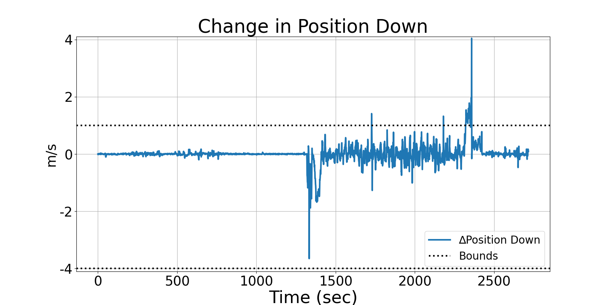
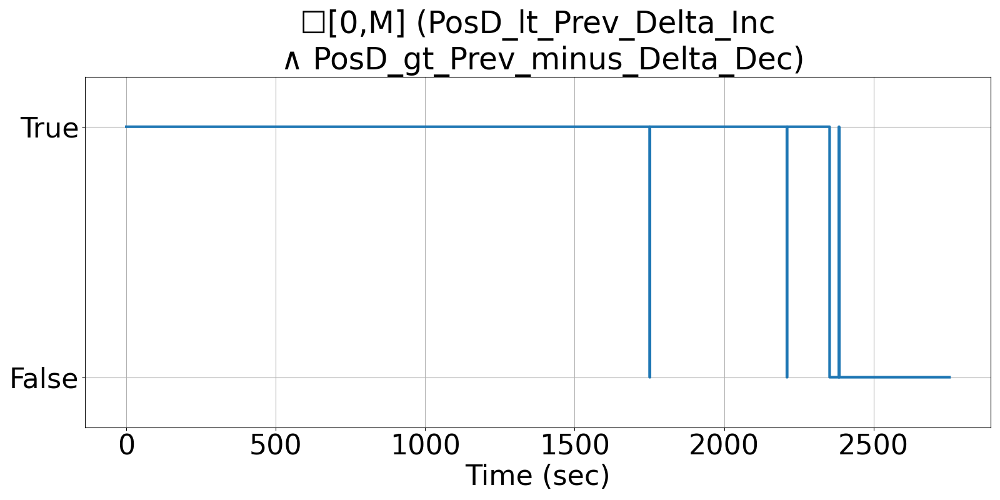

Integrating Runtime Verification into an
Automated UAS Traffic Management System
Matthew Cauwels, Abigail Hammer, Benjamin Hertz, Phillip H. Jones, Kristin Y. Rozier
This webpage contains supplementary specifications for "Integrating Runtime Verification into an
Automated UAS Traffic Management System" by M. Cauwels, A. Hammer, B. Hertz, P. H. Jones, and K. Y. Rozier
RC_UAS_3
Specification Description
The vertical position (PosD) shall not change by more than POS_DELTA_INC or less than POS_DELTA_DEC each sample instance at any time
Signals Required
PosD
Boolean Conversion of Signals to Atomic Inputs
PosD_lt_Prev_Delta_Inc: PosD < PREV_POSD + POSD_DELTA_INC
PosD_gt_Prev_minus_Delta_Dec: |PosD| > PREV_POSD - POSD_DELTA_DECMLTL Specification
☐[0,M] (PosD_lt_Prev_Delta_Inc ∧ PosD_gt_Prev_minus_Delta_Dec)
Fault Explanation
Vertical Position is changing too fast
Additional Notes
POSD_DELTA_INC is maximum increase in altitude, POSD_DELTA_DEC is maximum decrease in altitude. Corresponds with operating bounds spec for vertical velocity.
Figures

